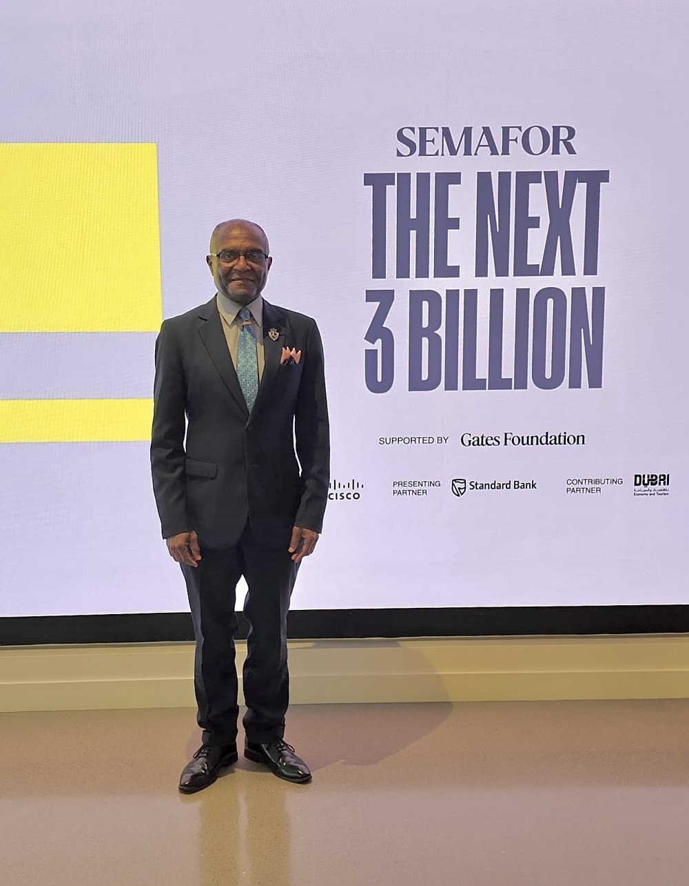
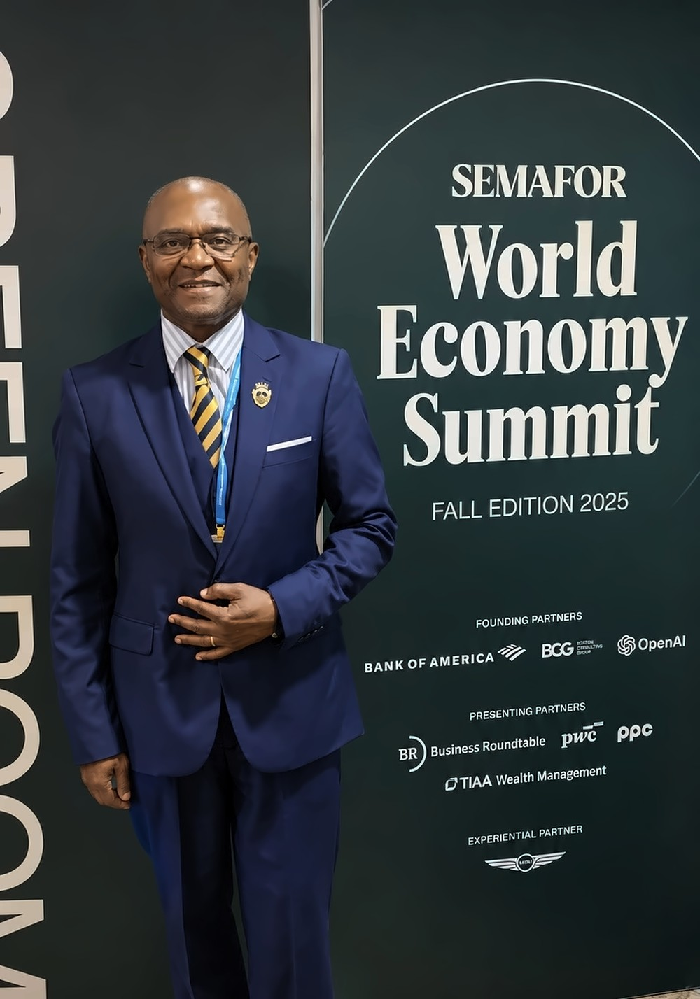
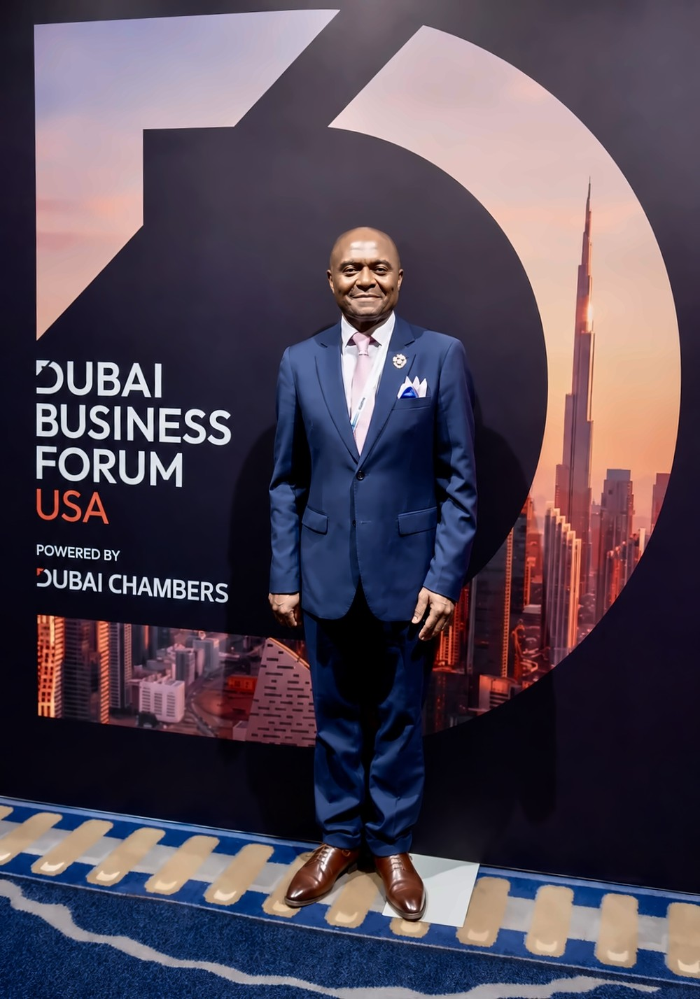
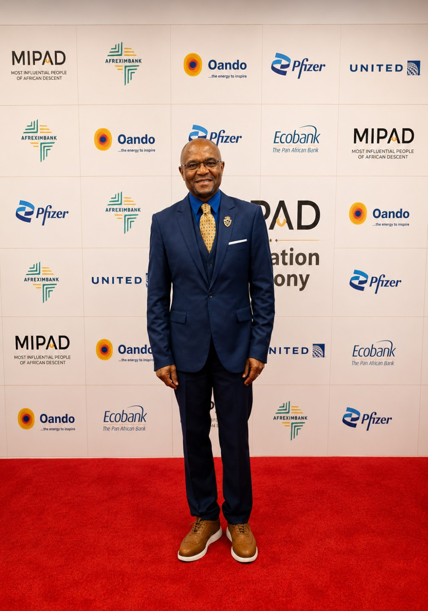
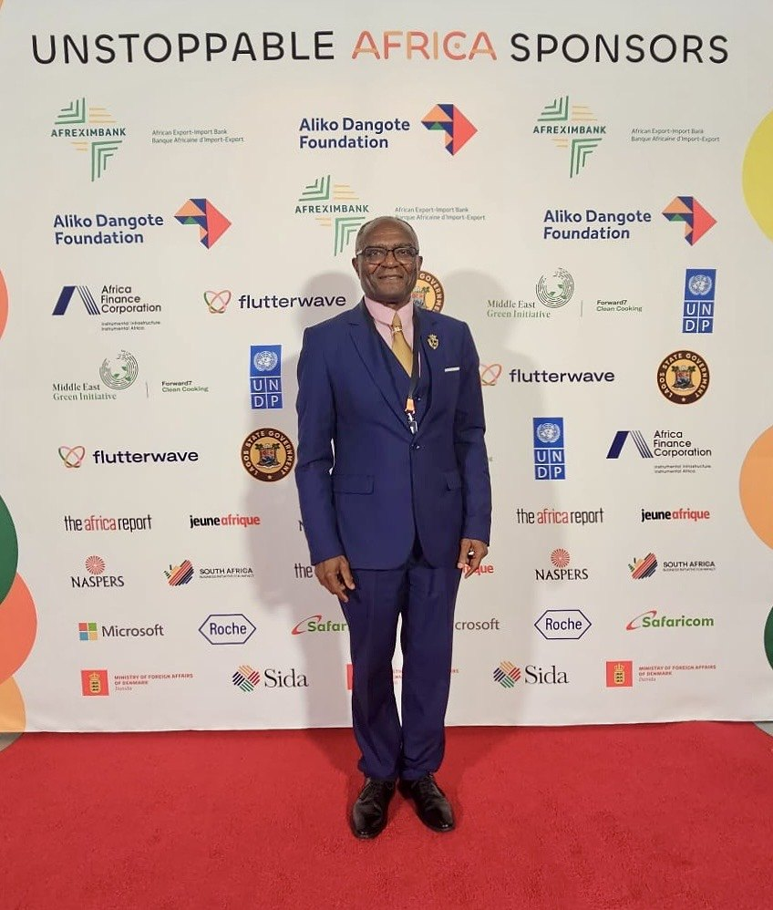
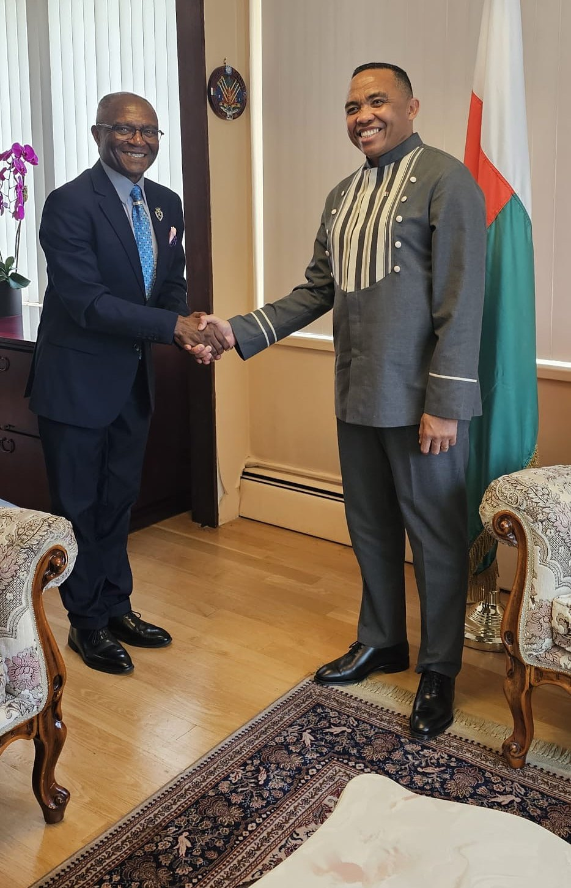

Video
Interviews & appearances
Recorded appearances. Nothing loads from YouTube until you press play.
Words / Speaking
Keynotes, panels, board discussions, institutional briefings, strategic dialogues and media.
AI, investment, fund building, capital formation, infrastructure and a practical One Africa vision.
Grounded in three decades of merchant banking, and current work investing in AI and building an Africa-focused venture platform.
Each engagement is shaped around the audience and the decision in front of it.
Each works as a keynote, panel, board discussion or briefing.
Africa has entered a second phase of AI policy. The question is no longer whether countries have strategies, councils, and readiness plans, but whether AI is making companies more productive, institutions more effective, and economies more competitive.
Technology alone does not create competitive companies. Founders require demanding customers, appropriate capital, capable institutions, talent, infrastructure, and pathways into larger markets. The central challenge is connecting these elements so that success compounds rather than remains isolated.
A prototype demonstrates possibility; an investable company demonstrates commercial potential. This theme examines what investors underwrite at different stages: the problem, customer, demand, team, defensibility, economics, valuation, and path from an initial use case to repeatable growth.
AfCFTA will not reach its potential through treaties and tariff schedules alone. African businesses need intelligence that helps them discover markets, meet standards, move goods, obtain financing, and build regional value chains. AI can help turn continental integration into everyday commercial capability.
Africa may not control every layer of the global AI stack, but it is not without agency. Governance authority, data bargaining power, selective infrastructure, applied intelligence, and regional cooperation can create leverage within an unequal global technology system.
One Africa is not an abstract political slogan. It is a practical economic proposition: connected markets, interoperable systems, regional capital, shared infrastructure, and companies capable of scaling across borders. The objective is not uniformity, but collective strength translated into global competitive advantage.
More than three decades of merchant banking have reinforced a central lesson: capital is rarely the only constraint. Transactions become financeable when risks are identified, allocated to parties capable of carrying them and supported by structures that align governments, sponsors, lenders, and investors around execution.






Recorded appearances. Nothing loads from YouTube until you press play.


Send the date, the audience, the format and the topic you have in mind. Travel from Washington, DC.